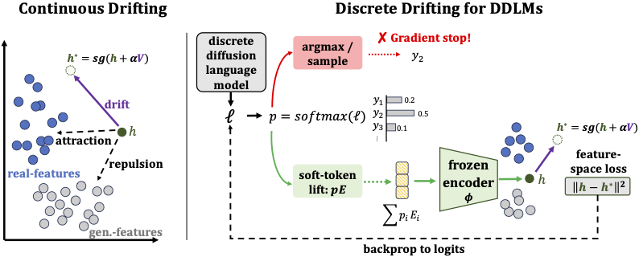
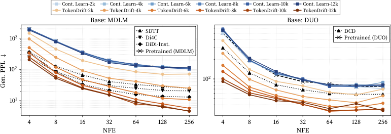
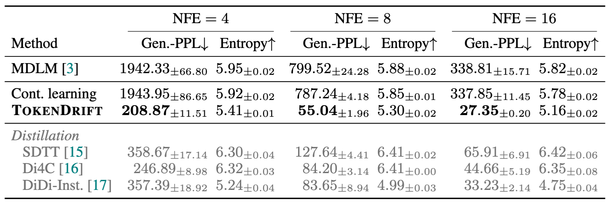
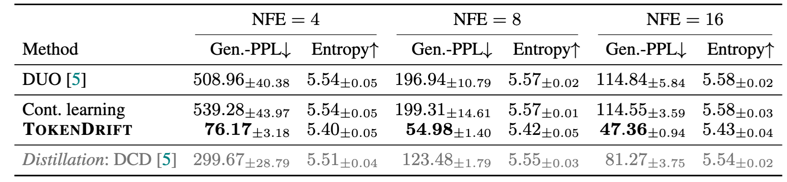

Drifting Objectives for Refining Discrete Diffusion Language Models
Abstract
Discrete diffusion language models (DDLMs) generate text by iteratively denoising categorical token sequences, while recent drifting methods for continuous generators suggest that part of this sampling-time correction can instead be absorbed into training through an anti-symmetric fixed-point objective. We study how to transfer this principle to DDLMs, where the main challenge is the interface with discrete text: hard token samples are non-differentiable, and categorical predictions do not directly provide continuous samples to drift. We formulate TokenDrift, a drifting objective that lifts categorical predictions to soft-token features, applies anti-symmetric drifting in a frozen semantic space, and backpropagates the resulting stop-gradient feature target to DDLM logits. In controlled continual-training experiments with masked and uniform-state diffusion backbones, TokenDrift improves fixed-NFE generation quality over matched continuation baselines, reducing Gen.-PPL at 4 NFEs by 89% on MDLM and 86% on DUO. These results suggest that drifting can provide a practical refinement objective for DDLMs.
TokenDrift
Original drifting constructs a stop-gradient target h* by moving the generated feature h along a drift field V. For discrete text, hard token sampling blocks gradients, so we lift token probabilities to soft embeddings, compute the drift target in feature space, and backpropagate the loss to logits.

Overview of our drifting formulation for discrete diffusion language models.
Training Dynamics
As drifting training progresses, Gen.-PPL decreases across the NFEs, showing that our drifting objective progressively improves fixed-budget generation quality rather than merely selecting a better final checkpoint.

Training dynamics from released MDLM and DUO checkpoints.
Few-shot Generation

OWT few-step generation results for masked diffusion (MDLM) at ckpt. 13k.

OWT few-step generation results for uniform-state diffusion (DUO) at ckpt. 13k.